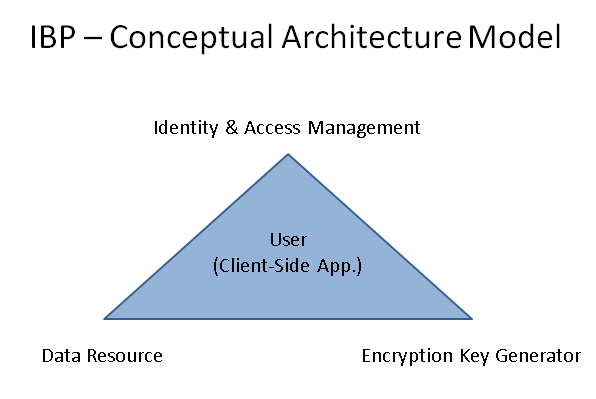

Encryption Key Generator
An Identity-Based Encryption Key Generator with OAuth 2.0 authorization.
The Identity-Based Encryption Key Generator (IBEKG) in combination with OAuth 2.0 authorization offers a new way to protect your data in the Public Cloud without the need to exchange certificates or memorize passwords. The whole user's data encryption process is made in a Web Application hosted in a browser and there is no need to download and install any software.
Identity-Based Privacy (IBP) - Conceptual Architecture Model
Data resource protection with Encryption Key Generator 
Further information is available on the following Cloud Computing & Privacy and IBP presentations.
IBEKG uses OpenSSL library running in FIPS 140-2 validated mode. Cryptographic schemes include NIST/FIPS approved algorithms SHA-256, AES-256 and CTR-DRBG-256.
Source code and more technical information on Encryption Key Generator lib GitHub pages.
Demo: https://airykey.org